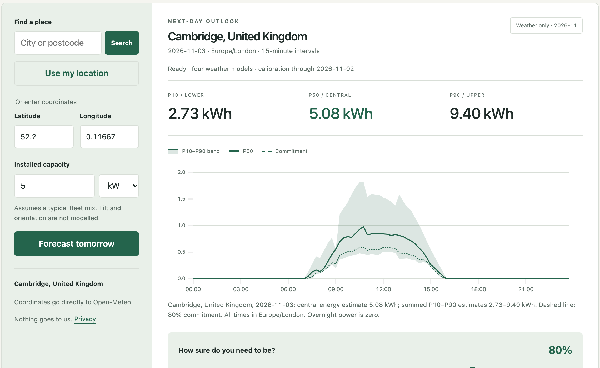
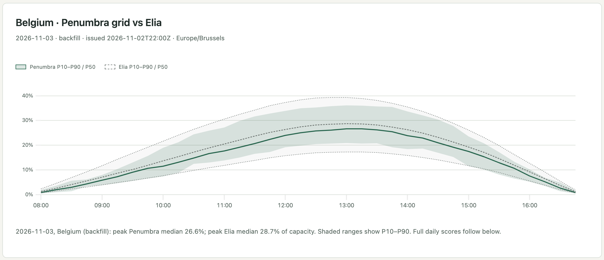

Penumbra
Tomorrow's solar power, with a margin. Calibrated day-ahead forecasts, checked in public against the grid operator.
DN-SU-01 Solar Energy Generation Forecasting · Yi Yu · yy5652-hash.github.io/penumbra
Penumbra · DATANOVA 2026 · DN-SU-01
2
Solar has to be promised a day before it shines
A single number hides the decision
Elia publishes its day-ahead solar forecast, with a P10–P90 range, at 11:00 the day before. The market plans on it.
A wide range is hard to plan on
The narrower the range at the same coverage, the more solar can be scheduled with confidence.
Accuracy should be checkable
Penumbra publishes its forecast next to Elia's every day and scores both the next morning.
12.6 GW
solar monitored by Elia in Belgium, November 2026
1,561 MW
average width of Elia's 80% band over the 359 test days
Penumbra · DATANOVA 2026 · DN-SU-01
3
Learn where the official forecast goes wrong, then calibrate the range
Inputs
Elia 11:00 forecast and its P10, P90
4 weather models, 48 h old
Fresh GFS, D-1 00z
D-1 morning output
Solar geometry and recent error
Residual model
LightGBM quantile regression learns P10, P50, P90 of the gap to Elia's median. Refit monthly on past data only.
Calibration
Rolling conformal shift from the last 60 days, set apart for each width and sun-height bucket, and for national and provincial rows.
Output
P10, P50, P90 every 15 minutes, for Belgium and its 11 provinces.
Second model, for any place on the map: four 48 h weather models, no local history and no Elia input. It runs inside the browser.
Penumbra · DATANOVA 2026 · DN-SU-01
4
Every v2 input existed at the 11:00 cutoff
History from 2021
Training start
Public data only
2025-05 to 2025-10
Validation
v2 choices made here
Commit 6e8d5b8
Freeze
Pipeline committed before the test
2025-11 to 2026-10
v2 test, run once
359 days; v1 and v2 each ran once
From 2026-11-04
Live ledger
Issued before the outcome
• Four 48 h weather models, plus fresh GFS 00z of D-1 from the NOAA archive
• D-1 morning measured output before the cutoff; other output lags stop at D-2
• Models refit monthly with a 2-day gap; calibration uses outcomes known by D-2
• Significance: paired daily differences, 2,000 block bootstrap draws
Penumbra · DATANOVA 2026 · DN-SU-01
5
On 359 test days, v2 improves pinball loss by 10.8% in Belgium
10.8% lower
pinball loss in Belgium; 95% CI of the daily difference excludes zero
9.1%
average 80% band width in Belgium: 9.1% vs 13.3% of capacity
MAE of the median: 2.79% vs 2.98% in Belgium, 3.28% vs 3.54% in provinces.
Penumbra · DATANOVA 2026 · DN-SU-01
6
A narrower band that still covers what it promises
Why this matters
Elia's band is too wide nationally and too narrow by province. Penumbra lands within half a point of 80% on both.
How
National and provincial rows are calibrated apart, on recent errors only, so the band follows the season.
Band width
Belgium: 9.1% vs 13.3%. Provinces: 10.5% vs 13.2% of capacity.
Penumbra · DATANOVA 2026 · DN-SU-01
7
Far ahead of open source, and it travels to places it has never seen
4.14%
MAE in 3 British regions, with a model trained only on Belgium
11.1%
Quartz on the same British rows and the same 48 h weather
Band coverage in Great Britain: 75.4% against the 80% target, with no local calibration data.
Penumbra · DATANOVA 2026 · DN-SU-01
8
For the Belgian system, the sharper band is worth hundreds of megawatts
488 MW
less average uncertainty to cover: band of 1,073 MW vs 1,561 MW
+203 MW
higher average P10: 2,054 MW vs 1,851 MW
10.5%
provincial band width vs 13.2%; coverage rises from 75.4% to 80.2%
Who uses this
• Grid operators: a band that is narrower at the same coverage
• Market parties: choose how much to sell, by the risk they accept
• Plant and home owners: plan batteries and loads for tomorrow
Basis: 359 test days, 11.76 GW monitored capacity. Outcomes reached the P10 level 89.9% of the time for Penumbra and 90.4% for Elia.
Penumbra · DATANOVA 2026 · DN-SU-01
9
Accuracy by horizon
| Horizon | Scope | Pinball | MAE | Cover 80 | Width |
| D+1 | Belgium | 0.012942 | 4.19% | 79.07% | 12.28% |
| D+1 | Provinces | 0.014479 | 4.68% | 79.47% | 13.73% |
| D+2 | Belgium | 0.014799 | 4.80% | 78.62% | 14.01% |
| D+2 | Provinces | 0.016258 | 5.26% | 79.29% | 15.39% |
| D+3 | Belgium | 0.017364 | 5.54% | 79.13% | 16.99% |
| D+3 | Provinces | 0.018541 | 5.93% | 79.67% | 18.04% |
Weather only. 2025-05-01 to 2026-10-31. Elia D+1 reference only: Belgium pinball 0.010669, width 13.78%; Provinces pinball 0.012203, width 13.59%
Penumbra · DATANOVA 2026 · DN-SU-01
10
A working forecast in under 15 seconds, with no sign-up

• Any place: map, search, GPS or coordinates; up to three panel arrays
• Model runs in the browser; coordinates go only to the weather API
• Margin slider turns the band into a conservative plan; best solar window per day
• CSV and JSON export, shareable links
• Installs on a phone; today to three days ahead
• Browser results match Python to 0.0001 on real weather, tested on every change
yy5652-hash.github.io/penumbra
Penumbra · DATANOVA 2026 · DN-SU-01
11
Every forecast goes on a public ledger, next to Elia's

Each morning after Elia's 11:00 forecast, Penumbra issues tomorrow's forecast. The next day it is scored automatically.
Hash-chained: each file holds the hash of the one before, and your browser checks the chain
Time-stamped: public Git history dates every entry
Honest labels: live days and backfilled days are scored apart and never added together
Penumbra · DATANOVA 2026 · DN-SU-01
12
Compared with the products people use today
| Solcast | Forecast.Solar | Sprixin | Quartz | Penumbra | |
| Forecast with no sign-up | No | API only | No | Install | Yes |
| P10, P50, P90 range | Yes | Not listed | Not listed | No | Yes |
| Measured coverage published | Not listed | Not listed | Not listed | No | Yes |
| Daily record against the grid operator | Not listed | No | Not listed | No | Yes |
| Margin-based daily plan | Not listed | No | Not listed | No | Yes |
| Tilt and orientation | Yes | Yes | Yes | Yes | Yes |
Based on each product's public pages and documentation, November 2026. "Not listed" means we did not find it there.
Penumbra · DATANOVA 2026 · DN-SU-01
13
Tech stack, sources and contributions
Tech stack
• Python, pandas, LightGBM
• Rolling conformal quantile calibration
• Static site, plain JavaScript, uPlot
• Trees exported to JSON for browser inference
• Scheduled daily ledger job
Third-party data and code
• Elia Open Data: solar, imbalance prices
• Open-Meteo Previous Runs, CC BY 4.0
• NOAA GFS archive, fresh D-1 00z
• Sheffield Solar PV_Live: GB outturn
• Energy-Charts: day-ahead prices
• Quartz Solar Forecast (MIT), baseline only
• uPlot (MIT)
Team and reproducibility
• Yi Yu: problem framing, data, modelling, validation, product, deck
• AI coding assistants helped write and check code
• Results reproducible from the public repository
• Experiment log: EXPERIMENTS.md
Try tomorrow
v2: 10.8% lower Belgian pinball loss. 80.2% coverage. A record anyone can check.
yy5652-hash.github.io/penumbra
Next: alerts and an API, more countries on the ledger.